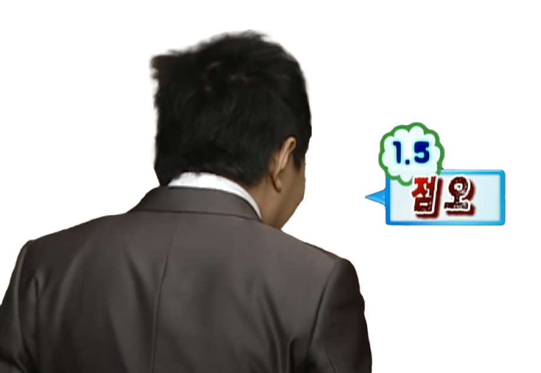

가가멜 가는 귀 먹은 DJ 가루 박 가루 전문 PD 가부키 박 가수왕 가수 박씨 가스맨 가스 박 가스 유포 상습가요계 제2의 현인 가위트 가사 자판기 가짜 이승철 가짜 편의점 사장 각설이 간大박 감정표현의 마술사 갑순여사장남
갑오징어 갓명수 갓파더 명수 강한 남자 개그계의 내장산 개그계의 유전 개그계의 어부 개그맨 박씨 개그 유전 개선장군 개성댁 개수 개아재비 거머리 거山박명수 거성 거성 당구장 박씨 거성 명수 거성 박명수 거성 박씨 거성 원숭이
거성 PMS 거울왕자 거친 말의 황태자 거침없는 명수 건방진 연예인 걸인 겉바속촉 명수옹 경제 개그맨 게임 구멍 게임 블랙홀 게임 할 명수 게임 까막눈 계수나 계수나 함 계주 고길동 고름 고모고모 고무줄계의 다크호스 고유감독
고유며느리 고유명수 고유차장 고유춘향 고춧가루 고층빌딩 매니아 과메기 괴롭히는 애 골무도사 골빈 곱등이 공갈사기견 공수래 아저씨 공익 개그맨 광고 할 명수 관계자 괴도 명수 구 악마 구 욕커 구멍 구멍 명수 구멍 분대장 구멍 병사
군산 바이킹의 후예 군산의 아들 군산의 자랑 군산 원숭이 군산 채플린 군대 먹방 할 명수 굼벵이 그냥 박 씨 그냥 P 그레이트박 그리스인 그림자 그저 그렇쿤 극강의 얼굴 극세사 다리 금방새 선생님 급발진 명수
기력업 할 명수 기부천사 기사의 아들 기사찮은 기어의 달인 스틱 박명수 길거리 배회 전문 리포터 길라이 아빠 김장 준프로 김치도둑 귀신 귀찮은 까마귀 까스박명수 깍두기형 깨방정 깨방정 뉴요커 깨방정 박 깨방정 찮은
깨방정 형님 꼬막이식 권위자 Dr. Park 꼰명수 꼴뚜기 꼴뚜기 박 꼴뚜기 왕자 꽃게 박씨 꾸리박 나를 이긴 남자 나르키명스 나무위키 할 명수 나무 작대기 나쁜놈 나쁜 3끼 나이많아 나카무라 박 낙지 난투극 전문가 날쌘돌이 박
낡은 개그 지킴이 남대문시장 식당모델 선호도 1위 남자 7호 내추럴 본 악마 낼모레 40 냉동 노계 냉동닭 냉혈한 노계 넙죽 박 노가리 노가리집 사장님 노계 노년명수 노래 할 명수 노루궁뎅이 노병 노병 박씨 노스트라 박 노익장
노인 노인네 노인명수 노인 원숭이 노장 노홍철 매니저 녹색 개그맨 뇌섹남 누에 눈 5쌍 달린 우주괴물 뉴욕 유경험자 뉴욕커 늑대 늦깎이 수험생 늙다리 늙은 간 늙은 개그맨 늙은 거성 늙은 광희 늙은 남자 늙은 냉동닭 늙은 닭
늙은 레옹 늙은 마왕 늙은 명수 늙은 맹수 늙은 박명수 늙은 박씨 늙은 사기꾼 늙은 사자 늙은 새우 늙은 악마 늙은 왕 늙은 왕자 늙은 여대생 늙은 여우 늙은 원숭이 늙은이 늙은 철이 늙은 코미디언 늙은 탐정 늙은 투계 늙은 P
닌자찮은 다방구 왕 다지기 명인 다지기 명장 다이어트 먹방 할 명수 닥터 박 단무지 단순왕 달고나 장인 달리는 나무 작대기 닭 닭고기 닭사마 닭 사장 닭집 명수 닭집 사장님 닭집 아저씨 답답해 당구장 박씨 당나라 해적 대도 박명수
대마왕 명수 대머리 독수리 대머리 원숭이 대변인 대악마 대인관계 F 댄스몽키 데이비드 찮커필드 도네이션 박 도덕인 도둑놈 도성 도우미 박 도축업자 도태개그 창시자 도토 대박 사건 루머 유포자 독도 지킴이 돌고래 인간 돌아온 명수짱
돌아온 카이저 흑채 동네 아저씨 동네 형님 동네 사장님 동네 삼촌 동네 친한 형님 동태 디렉터 박 디자이너 박 딜러 따귀 마스터 딱따구리 명수 따오기 따오명수 땅꾼 박씨
때명수 떠오르는 거성 떡갈비 타짜 똥광이 형님 똥명수 띵수 라면 박 라방 할 명수 라오스 박 라이언 박 라푼젤 라품젤 랩 명수 럭키 명수 럭키 찮은 런치의 왕자 레옹 레이서 박 레이서 찮은
레이싱 놀부 레전드 선배 레전드 박 레찢남 로키찮 마녀 로키찮은 루시아 아빠 리더 리얼의 신 리포터 박 마도로스 박 마오쩌둥 마왕 마왕의 아들 마흔강아지 마흔찮은 만국공통악마
만주벌판 오랑캐 씨 맏며느리 맏형 말갈족 말새 망둑어 매남 매니저계 기피대상 1호 매 맞지 않아 다행인 남자 매안행 맥가이버 맥가위버 맥아리 박 맥커터 맨발의 찮은이 맹수
머리엔 석탄 얼굴엔 기름 아래에선 메뉴박 메생이 멱살명인 멱살잡이 면봉 하찮은 멸구리우스 멸구필 명나리자 명다코 명단태 명멍이 명보리쌀 명삼이형 명수노믹스 명수산성 명수샘
명수 세끼 명수옹 명수 아저씨 명수앤캐시 명수충 명수형 명쉘 명수트라다무스 명시카 명이나 명의 박명수 병원장 명올레타 명중만 명자민 수튼 명타니아 명티브 잡수 명프라 윈프리 명TOP
명화백 모자라면서 나쁜 친구 모조품 브로커 몸개그 백전노장 몸곰팽이 (잇)몸짱 몹쓸놈 못생긴 개그맨 못생긴 노계 못생긴 닭 못생긴 삼촌 못생긴 아저씨 못생긴 코미디언 못생긴 형 못생긴 희극인 몽키박
무도 사망꾼 무면허 화타 무한도전 1.5인자 무한도전 2인자 무한도전 공식 유부남 1호 무한도전 게임연구소 수석 실험맨 무한도전 에피타이저 무한도전의 미래를 보는 자 무한도전 홍보대사
물도둑 물주 박씨 뮤즈박 미남명수 미래소년 명수 미래소녀 명수 미사리 박씨 미스터빈 미인박명(수) 미운놈 미친 예지력 박명수 미중년 미키명수 민덕 민두 민두래곤 민머리 민(두)물새우 민서 아빠 민서 아비
민서 애비 민요의 아버지 밀렵꾼 박씨 밍수히메 바다의 왕자 바디프로필 전문가 박씨 바람난 딱정벌레 바람의 아들 바보 바이킹의 후손 바지 보스 바퀴벌레 유충 배드독 박가수 박가이 박갑부 박거북 박거상
박거성 박공약 씨 박광대 박 교수 박구리다 박군 박기자 박기태 박길동 박깃발 박꿩 박꼼수 박나물 박남용 박내관 박내비 박노계 박노아 박노예 박노인 박느님
박단원 박달인 박달장 박닭 박닷가재 박대상 박딩크 박띵수 박마오 박마허 박마흔 박맹수 박메뉴 박멜다 박며느리 박면봉 씨 박멸구 박명례 박명무 박명수퍼맨 박명순 박명신 박명자 박문수 박미담
박미래 박밍수 박반장 박반파 씨 박방범 박배치 박백채 씨 박번복 박별명 박뻐꾹 박보조 박 부장 박북이 형 박불암 박빌런 박 사장 박사건 박산통 박상식 박싱어 박수 박 서방 박 선배 박 선생님 박스 줍는 노인
박스타 박승철 박씨 박씨 삼촌 박씨 아저씨 박씨 할아버지 박앵무새 박연배 박 영감 박영표 박옹 박 원로 박왈츠 씨 박왕초 박운도 형님 박의 명수 박 의원 박 이사 박이에 박인수 박 인턴 박작가 박작곡 박아더 장군
박 장군 박재석 박전갈 박준표 박중근 의사 박조커 박준기 박중고 박쥐명수 박지민 박짤방 박진국 박차르트 박 차장 박챔프 박첨지 박취발이 박캣츠 박크러치 박타 박탈모 박탈선 박탈성 구순염 박태민 박테리아 박테리어
박 팀장 박파마씨 박프스 박팔푼 박포졸 박퐁뒤 박형 박 형사 박호랑 박 화백 박 PD 반 남은 그릇 반나체 훈련병 반머리 반전 제조기 반백 살 반전 폭격기 반칙의 아버지 반칙왕 밤의 대통령 방구차 방귀 오빠
방귀 팩토리 방귀왕 방귀 항아리 방명숭 방배동 박씨 방배동 벼멸구 방배동 산체 방배동 살쾡이 방배동 쥐며느리 방배동 찮은이형 방살이 형 방송계 막말 양대산맥 방송계의 남사당패 배고픈 부자 배그 할 명수 배드 독 배추벌레
배치는 노소년 배치 박 베테랑 DJ 밸런스 게임 할 명수 뱀 잡는 땅꾼 박씨 뻥상 아저씨 빨간 바지 아저씨 벌레 벼멸구 벼멸구 닮은꼴 벼멸구 대표 변희봉 선생님 별명왕 별명스타 병원장 보급형 말리꽃 보급형 이승철 보너스 형
복명수 볼링 행위예술가 1호 봄신랑 봅슬박 봉달 부동산 업계의 방랑 시인 부장교사 부장급 PD 북따구리 북명수 분대장 분비물 개그의 1인자 분비물계의 선구자
분비물의 제왕 분비물 박 분비물 전문 액션배우 불개미 형 불닭집 알 카포네 불량성냥 불량학생 불명수 불효자 불속성 효자 불쾌한 불혹왕자 불혹형 불효자 박명수 국민 연금술사 국민 MC 국산 원숭이
브로커 박 브라질 한류스타 1호 비난계의 테크니션 비둘기 비둘기 다리 비행기 산소분사 男 빅명수 빈그릇 빈오빠 빙상인 빙어왕 빙초산 빠가사리피터고라스 핑크 명수 패셔니스타 팬터마임 거성 희귀두상 히드라 히스찮은 히어로
빡시 뼈그맨 뼈때리는 박명수 뿅망치 마스터 뿌웃~ 넉! 뿡뿡이 0표 아저씨 1.5인자 12 간지 19금 피부 2-49 2시의 깨방정 2인자 2키 낮춘 이승철 238번 훈련병 286PC 3수생 30사단 유학파 3씨 39년된 가시나무 4번 타자 4집 가수
40년 묵은 묵은지 42년근 홍삼 42B 43년산 과메기 43년정도 묵은 동태 5월의 신부 5분 전 동지 5분 후 적 700827 8비트 유로댄싱머신 8집 가수 8집 립싱크 가수 A형 간염인 Angry Comedian Angry맨 Before의 결정체 B.S.U
BBB(박번복) Billy Crystal CI 자판기 CI 전문가 DJ찮 DJ Park DJ G-park Dr. Park E.파 EDM 공장장 EDM 노인 EDM 선구자 EDM 스타 EDM 수호자 EDM 왕 EDM 왕자 EDM의 아버지 EDM 전사 EDM 전설 EDM 황태자
G-Park IT 가이 KBS의 아들 MBC 성골 MBC의 순수혈통 MBC의 아들 MBC의 자손 MBC 웃음의 작은 별 MC계의 꿈나무 MC 닭 MC 명수 MC 박 MC 수 Mr. 맥커터 Mr. Park Mr. Angry N행시 강자 N행시 공장장 N행시 고수 N행시 노인
N행시 달인 N행시 마왕 N행시 선구자 N행시 왕 N행시 왕자 N행시 자판기 N행시 장인 N행시 전설 N행시 천재 N행시 최강자 N행시 황제 New York 바리스타 No.1 재주꾼 NG의 왕자 NS명수 NYSD(뉴욕쇠독) P PMS SD(쇠독)
SM 1기 Smart Guy UN 차도남 차떼기 박씨 차력사 로키 차세대 리더 참지않는 명수 찮다라박 찮데렐라 찮운장 찮은댁 찮은본색 찮은아빠 찮은이형 찮은큘라
챔프 박 천둥벌거숭이 천안문 아저씨 천재 박명수 철새 예능인 철거반장 청나라 사신 청년명수 청벼멸구 초강력 웃음지뢰 초소형 초경량 비행기 총각 선생님
최광자 최고령 아이돌 최백호 최종병기 얼굴 최측근 추(秋)남 추메 추명수 출장 MC 충's 충무로 박 춘삼이 춘삼이 아저씨 춘삼이 형 춘향할멈 출장 앵커 출장 MC 춤 공장 치킨 CEO 치킨의 명수
치킨의 왕자 치명 치킨교 교주 치킨 아버지 치킨집 박사장 칠성이 칠푼이 침피언 침흘리는 개 침흘리는 CEO 측량사 박씨 츤데레 츤데레 박씨 츤 박 츤명수 구시대 개그맨 귀여운 하찮은 국민거성
사기꾼 사기계의 큰 별 사랑꾼 사눈이 형 사이버 가수 사이버 명수 사장님 사진사 박 씨 사탄 사탄의 아들 사탄의 인형 사진사 할 명수 산유국 산악인 산초박 살모사
살아있는 인간 살쾡이 살쾡이 박 삼찮은 삼행시의 타짜 삼행시 명인 삼행시 장인 상관마마 상남자 상암동 피바라기 상형문자 상황극의 신 삿포로 박 새우눈
샘태민 생닭 생선 생존왕 생필품 수집가 생화학 무기 소지자 생활의 달인 생활무기의 달인 쌩초보 병사 쌩초보 분대장 쌩초보 훈련병 싼초박 싼초밥 서당개 박씨
서래마을 개그맨 서래마을 고길동 서래마을 노계 서래마을 닭 서래마을 대표 로맨틱가이 서래마을 민머리 서래마을 차인표 서래마을 휴 그랜트 서민 개그맨 서민 연예인
서킷 킬러 설 음식 할 명수 성대에 꿀과 똥이 같이 있는 유일한 가수 셔터맨 석연찮은 선글라스 워리어 선장이 형 성골 설계왕 박명수 설탕꿀의 명수 설탕 외길 박명수 선생
성난 개미핥기 세미 프로 세인트릴리명수 섹남 섹시한 남자 쎅남 소녀명수 소년명수 소드 마스터 소시민 손공수 박 솔로몬 박 솔라 박박사 쇠독 쇠독명수 수 수명이형 수재 박
수타미녀 라푼젤 술래 박 슈퍼스타P 스몰 스타 스컹크 박 스콜피언박 스쿠터 박 스타 가수 스타 개가수 스타 개그맨 스타 박 스타 박명수 스트라이커 스틱 박명수 스트레스 주범
스페어 박 스피드 박 슬리퍼즈 승리 요정 시골 영감 시니어 경보인 시니어 박 시니어 찮은 시릴로 시스루 박 시원찮은 시민 시민 논객 시민 박씨 시민 박명수 시민의 대표
시큼이 소현 신데렐라 신비주의 뮤지션 신진대사 신 호통 싫든 심봉사 십잡스 싱어 박 싱어송라이터 일렉트로닉 박가수 일본 개그맨 일본인 일본 원숭이 일산 돈벌레 일용엄니 임연수
아내 바보 아내에게 한없이 약한 남자 아랍명수 아랍 박 아랍 왕자 아메바 아버님 아버지 아빠 아이 오브 살쾡이 아주 그레이트박 어이돌 사진사 할 명수 아이유 효과 경험자
악덕지주 악마 악마 매니저 악마 비난교 교주 악마 원숭이 악마의 아들 악마의 손톱 악몽 악플 사냥꾼 안녕갑디 안면 강타 알파박 액션 영화 마니아 야마모토상 야성의 하찮은
야 이노마여 야 이노미여 야크나이트 야크갑 양계장 박씨 양계장 사장님 양궁 보이 양치기 중년 어머니 엄마 에어로빅 영재 에이스 여드름 북두동자 여드름 브레이크 여드름 폭탄
여운계 여의도 가수 여의도 개가수 여의도 개그맨 여의도 고길동 여의도 냉동닭 여의도 노계 여의도 닭 여의도 박씨 여의도 박황달 여의도 사냥꾼 여의도 살쾡이 여의도 스타
여의도 어르신 여의도 예능인 여의도 원숭이 여의도 자객 여의도 찮은 여의도 코미디언 여의도 희극인 역겹이 역전의 명수 역기 천재 연예계 대표 악마 연예계 대표 츤데레 연예인 박씨
연합군 수장 안녕갑디 연예인 수신거부 1호 영웅 벼멀구 선생 어르신 어르신 박씨 어류남 어민 박씨 어부 어사 박명수 억지 기부천사 언더커버티쳐 언럭키 이승철 언박싱 할 명수
얼리 어답터 박씨 엄용수 염증이 형 예능계의 고길동 예능계의 잡스 예능인 박씨 예능 고수 예능 장인 예능 천재 예비 자장인 오렌지 형님 오맹달 오목 까막눈 오목 신생아 오좀비
오토매틱 댄스몽키 오호츠크 박 오호추남 옹 탐정 완소남 왕회장 왜구 외계인 외계소년 명수 외계중년 명수 요리 할 명수 요로 박 요로족 요섹남 요술공주 명수 욕 그랜트 욕사마
욕잡스 욕쟁이 아범 욕커 욕커 박 우장춘 박사 우주 웃음 사냥꾼 웃음 명인 웃음 사기꾼 웃음 사냥꾼 웃음 사망꾼 웃음 연금술사 웃음 연쇄 살인범 웃음 장인 웃음 치료의 히포크라테스
웃음참기 메이커 원더 할머니 원로 개가수 원로 개그맨 원로 냉동닭 원로 연예인 원로 예능인 원로 역도인 원로 코미디언 원머리 투냄새 원숭이 원양 희극인 1호 원조 악마 월매명수
웨이터 박 위인 명수 유명인 바라기 유력 용의자 유부 1호 유부남 유사 이승철 유재석 부하 유재석 지지자 유튜버 박 유 후보 저격수 유쾌한 육잡이 윷잡이 의사 남편 의학의 남편
이마 넓은 친구 이마 밀물썰물 친구 이마팔이 이멜다 이무기 이명수 이상봉 이상봉 선생님 이상봉 쌤 이상한 박명수 이상한 변호사 박명수 이야기 할 명수 이행시 장인 이중인격 알바생
이집트 왕족 파라오 박 인간 내비 인간 믹서기 인간 짱뚱어 인기 가수 인기 개그맨 인기남 인기 스타 인기 코미디언 인면어 인질 박 인터뷰 머신 박명수 인턴 할 명수 일개 반머리
자기계발서 작가 할 명수 자밀리에 자석이 형 자이언트 거성 자이언트 박 자칭 밤의 대통령 자칭 오목고수 작곡가 작곡신 작곡왕 작곡가 박 작곡의 신 작곡의 왕 작명의 신 작명수
자아성찰 할 명수 자연인 자원의 왕자 자장자장 할 명수 작사가 작사가 박 작사의 신 작사의 왕 작사신 작사왕 작사 할 명수 잔디 잔디인형 잔반 잔소리 할 명수 잘되는 놈
잡상인 박씨 잡수 재개발 전도사 재채기 박 재키찮은 저승사자 적 전설 전직 (치킨) CEO 재능형 사진사 재활 의학과 교수 전문 웃음 사냥꾼 정비사 박씨 정보화시대 개그맨 정준하 사냥꾼
정준하 킬러 정준하 저격수 정 후보 지지자 제너레이셔널 제이크 찮은 제 2의 현인 점오 점오 꿈나무 주꾸미 주꾸미 박 주꾸미 선수 조금 모자라면서 나쁜 친구 조지 조커 조커명수 조커 박
조커 박씨 좌 명수 좌지우지 선생님 죄인 좀도둑 좀비 박 졸부 주미 바보 주인공 쥐팍 중고거래 할 명수 줄리아나 나이트 쥐며느리 지니어스 박 지루성 피부염 지성인 지옥의 미소 직진할 명수
직장인 박씨 진골 진정한 조커 진정한 희극인 진행의 신 진짜 불효자 질환이형 집게벌레 증인 박씨 장거창 장인 장인 명수 짠돌이 짭승철 짱뚱어 짱뚱어 달리기 권위자 짱뚱어 달리기 창시자 쩜오
쩜오인자 쩜오 예능인 쪼쪼왕자 쫄명수 쭈구리 카이저 박 카이저 흑채 캡틴 박 캡틴 사르모사 커맨더 박 코리안 훼이머스 코미디언 콩나물머리 콩꼬투리 쿠키영상 할 명수 쿨가이 쿨거성
쿨남 쿨명수 쿨 박 쿨찮은 퀴벌이 아빠 크로마명수 크로우 박 큰 웃음 빅재미를 만들 수 있는 한 인물 큰형 큰형님 킬러 박 킹메이커 킹명수 코스프레 박
탈모 탈모걸린 거성 탈모 박 탈모상담 할 명수 탈모인들의 희망 태극권 아저씨 태몽 태민 택껸 터진 입 터어키 형 테러리스트 토상 통아버지 통키 투모로우 피프티
투명인간 트랜스 지방 트랜지스터 박 특수모발 특이하고 웃긴애 특전사 팀장명수 파마사자 파일럿 박 팔푼이 펑크명수 펌핑 박 편찮은 평단원 박씨 평범한 시민 패션왕 할 명수
패왕별희 펭귄맨 펭귄 박 펭명수 펭수 폐인 박씨 포기를 모르는 남자 포레스트 명수 포아이 파이브 아이 폭력 PD 폴명수 퐁명수 파 파리대왕 퐈 프레데터 피노키오 명수 피터
하류스타 하멜 박 하수인 하얀거성 하와이안 박 하얼빈 처돌이 하이에나 하인 하찮은 하찮은 가수 하찮은 개가수 하찮은 개그맨 하찮은 남자 하찮은 냉동닭 하찮은 노계 하찮은 늙은 닭 하찮은 닭
하찮은 마왕 하찮은 몸 하찮은 몸뚱이 하찮은 바리스타 하찮은 박 하찮은 박명수 하찮은 스타 하찮은 악마 하찮은 왕 하찮은 왕자 하찮은 코미디언 하찮은 한수민 남편 하찮은 형 하찮은 9단
한강남자 한량 한 머리 두 냄새 한무 한 번도 쉰 적 없는 남자 한수민 남편 할머니 할명수 할배DJ 할아버지 할아버님 할아비 곰 해맑은 도망자 행복해 행사 진행 최고수 행위예술가 허수아비 헛방맨
헤어 박 혐오모델 작가 형 형님 호랑이 교장선생님 호통 개그맨 호통 도사 호통명수 호통의 신 호통 CEO 혹부리 영감 혼남 홍콩할매 화이트 와인 킬러 화킬 박 화성인 활어 황금박쥐 황달 박씨 황태자 황비홍
황찮은이 황토방 사장님 회센타 박 회센터 박 회춘한 산 사나이 후라이 명수 후진 효자 박명수 흑감독님 흑류 흑채 1기 개그맨 흑채 개그맨 흑채국 독립투사 흑채남 흑채머리 흑채 박 흑채 코미디언 흑채토닉
